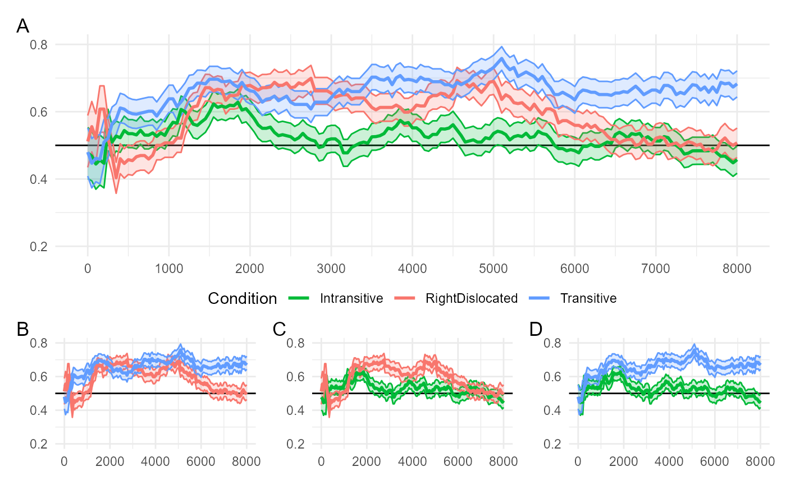
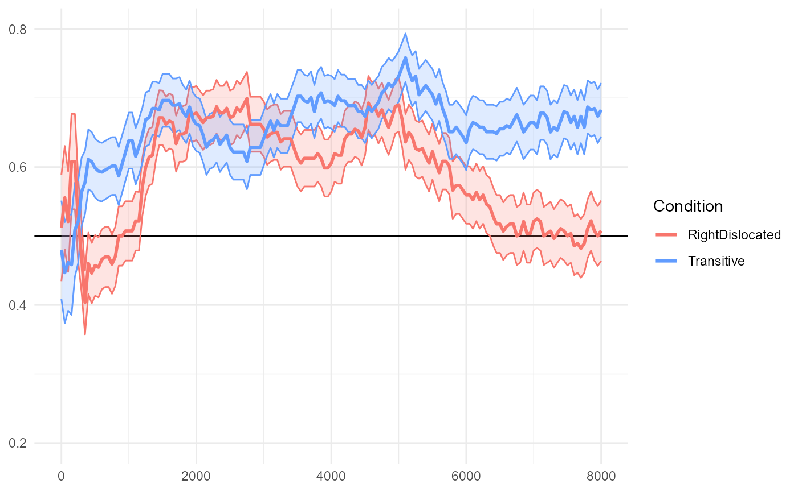
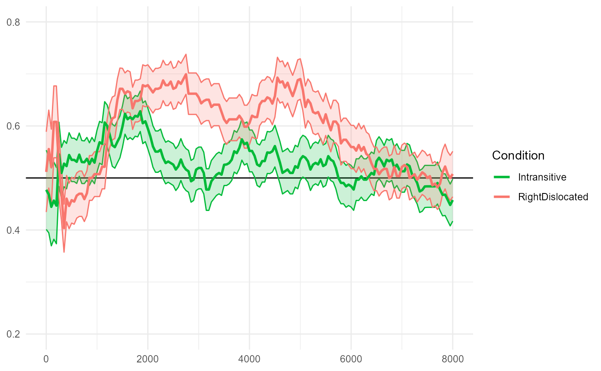
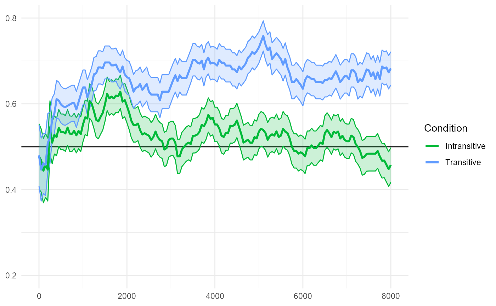
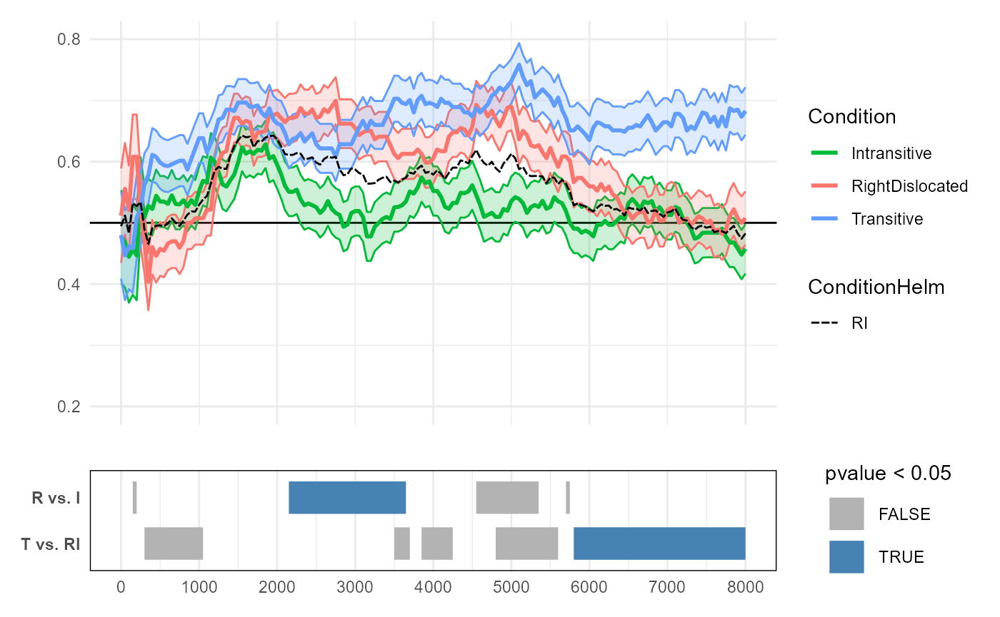
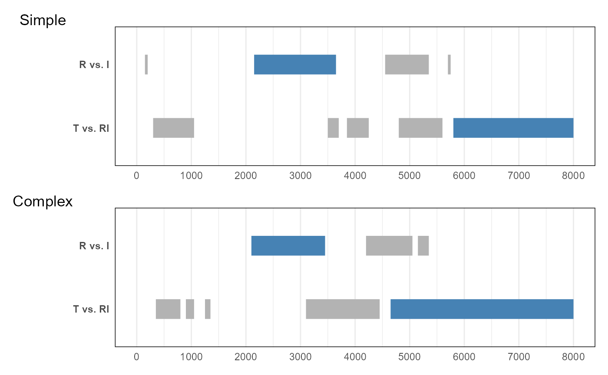
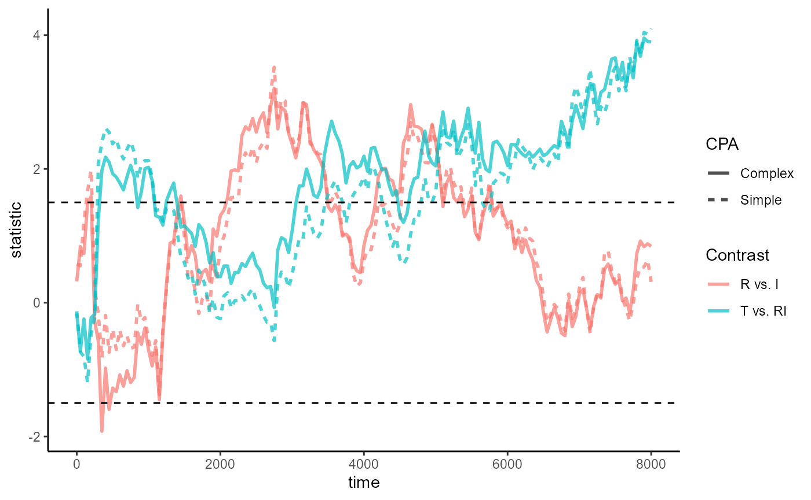
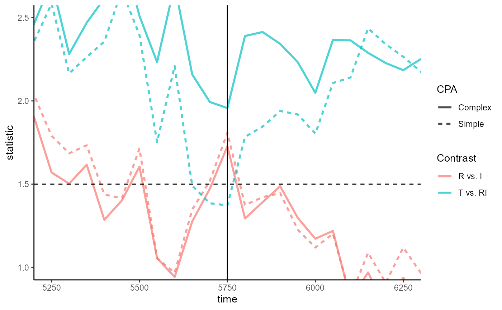

de Carvalho et al. 2021
Source:vignettes/articles/deCarvalho-et-al-2021.Rmd
deCarvalho-et-al-2021.RmdThis tutorial is a walkthrough of contrasts for multi-level predictors (vs. multiple t-tests) and model complexity (linear vs. logistic; fixed vs. mixed) as they relate to CPA.
See more tutorials and vignettes on the Articles page.
Background
The data comes from an eye-tracking study by de Carvalho, Dautriche, Fiévet, & Christophe (2021) “Toddlers exploit referential and syntactic cues to flexibly adapt their interpretation of novel verb meanings.”
This article reproduces and expands on their Experiment 2 analysis, which used CPA (with t-tests) to conduct a pairwise comparison of the three conditions (relevant Figure 7 from the paper below).

The data comes mostly ready for CPA straight from the study’s OSF repository. The collapsible chunk below contains the code to prepare the data and reproduce the figure.
Code to reproduce data and plot
Data cleaning
library(dplyr)
library(forcats)
filepath <- "https://osf.io/download/var2h/?view_only=2a06746ba360446e9857df73307d21be"
E2_data_raw <- readr::read_delim(filepath)
E2_data <- E2_data_raw %>%
filter(away != 1) %>%
mutate(Target = as.integer(bin_2P == 1)) %>%
mutate(Condition = fct_recode(
factor(Condition, levels = c("intrans", "pros", "trans")),
"Intransitive" = "intrans",
"RightDislocated" = "pros",
"Transitive" = "trans"
)) %>%
select(Subject, Trial, Condition, Time, Target)
E2_data_agg <- E2_data %>%
group_by(Subject, Condition, Time) %>%
summarize(Prop = mean(Target), .groups = "drop")
# Unaggregated trial-level data of 1s and 0s
E2_data
#> # A tibble: 69,123 × 5
#> Subject Trial Condition Time Target
#> <chr> <dbl> <fct> <dbl> <int>
#> 1 200.asc 0 RightDislocated 0 0
#> 2 200.asc 0 RightDislocated 400 0
#> 3 200.asc 0 RightDislocated 450 1
#> 4 200.asc 0 RightDislocated 500 1
#> 5 200.asc 0 RightDislocated 550 1
#> 6 200.asc 0 RightDislocated 600 1
#> 7 200.asc 0 RightDislocated 650 1
#> 8 200.asc 0 RightDislocated 700 1
#> 9 200.asc 0 RightDislocated 750 1
#> 10 200.asc 0 RightDislocated 800 1
#> # ℹ 69,113 more rows
# Aggregated subject-mean proportions data used in original study
E2_data_agg
#> # A tibble: 11,540 × 4
#> Subject Condition Time Prop
#> <chr> <fct> <dbl> <dbl>
#> 1 200.asc RightDislocated 0 0.5
#> 2 200.asc RightDislocated 50 1
#> 3 200.asc RightDislocated 100 1
#> 4 200.asc RightDislocated 150 1
#> 5 200.asc RightDislocated 200 1
#> 6 200.asc RightDislocated 250 0.5
#> 7 200.asc RightDislocated 300 0.5
#> 8 200.asc RightDislocated 350 0.4
#> 9 200.asc RightDislocated 400 0.286
#> 10 200.asc RightDislocated 450 0.429
#> # ℹ 11,530 more rowsCode for Figure 7 plots
library(ggplot2)
#> Warning: package 'ggplot2' was built under R version 4.3.1
make_fig7_plot <- function(conditions) {
E2_data %>%
group_by(Condition, Time) %>%
summarize(
Prop = mean(Target), se = sqrt(var(Target) / n()),
lower = Prop - se, upper = Prop + se,
.groups = "drop"
) %>%
filter(Condition %in% conditions) %>%
ggplot(aes(Time, Prop, color = Condition, fill = Condition)) +
geom_hline(aes(yintercept = .5)) +
geom_ribbon(
aes(ymin = lower, ymax = upper),
alpha = .2,
show.legend = FALSE,
) +
geom_line(linewidth = 1) +
scale_color_manual(
aesthetics = c("color", "fill"),
values = setNames(scales::hue_pal()(3)[c(2, 1, 3)], levels(E2_data$Condition))
) +
scale_y_continuous(limits = c(.2, .8), oob = scales::oob_keep) +
labs(y = NULL, x = NULL) +
theme_minimal() +
theme(axis.title.y = element_text(angle = 0, vjust = .5, hjust = 0))
}
fig7_comparisons <- list(
"A" = c("Intransitive", "RightDislocated", "Transitive"),
"B" = c("RightDislocated", "Transitive"),
"C" = c("Intransitive", "RightDislocated"),
"D" = c("Intransitive", "Transitive")
)
fig7 <- lapply(fig7_comparisons, make_fig7_plot)
# Figure 7 combined plots
library(patchwork)
#> Warning: package 'patchwork' was built under R version 4.3.1
p_top <- fig7$A +
scale_x_continuous(breaks = scales::breaks_width(1000)) +
theme(legend.position = "bottom")
p_bot <- (fig7$B + fig7$C + fig7$D) & guides(color = guide_none())
fig7_combined <- p_top / guide_area() / p_bot +
plot_layout(guides = "collect", heights = c(2, .1, 1)) +
plot_annotation(tag_levels = "A")Below is the data from the original study (as close as I could
reproduce it). The E2_data_agg dataframe has the following
four columns:
-
Subject: Unique identifier for subjects -
Condition: A between-participant factor variable with three levels ("Intransitive","RightDislocated","Transitive") -
Time: A continuous measure of time from 0-8000ms in 50ms intervals -
Prop: Proportion of looks to the target (averaged across trials within each condition, by subject)
E2_data_agg
#> # A tibble: 11,540 × 4
#> Subject Condition Time Prop
#> <chr> <fct> <dbl> <dbl>
#> 1 200.asc RightDislocated 0 0.5
#> 2 200.asc RightDislocated 50 1
#> 3 200.asc RightDislocated 100 1
#> 4 200.asc RightDislocated 150 1
#> 5 200.asc RightDislocated 200 1
#> 6 200.asc RightDislocated 250 0.5
#> 7 200.asc RightDislocated 300 0.5
#> 8 200.asc RightDislocated 350 0.4
#> 9 200.asc RightDislocated 400 0.286
#> 10 200.asc RightDislocated 450 0.429
#> # ℹ 11,530 more rowsThe following is a reproduction of Figure 7 from the original paper:
fig7_combined
The original study used pairwise comparisons to analyze the relationship between the three conditions. The smaller figures (B, C, D) plot the following relationships:
-
(B) More looks to the target in
"Transitive"compared to"RightDislocated" -
(C) More looks to the target in
"RightDislocated"compared to"Intransitive" -
(D) More looks to the target in
"Transitive"compared to"Intransitive"
The rest of this vignette is organized as follows:
First, we replicate the individual pairwise CPAs from the original paper.
Next, we consider a more parsimonious analysis that reformulates the same research hypothesis as a choice of regression contrast.
Lastly, we build on the model from (2) and consider issues around model diagnostics and complexity (linear vs. logistic; fixed vs. mixed) in the context of CPA
Load the package and start the Julia instance with
jlmerclusterperm_setup() before proceeding.
library(jlmerclusterperm)
jlmerclusterperm_setup(verbose = FALSE)Replicating the pairwise CPAs
The three conditions in the experiment are levels of the
Condition factor variable:
levels(E2_data_agg$Condition)
#> [1] "Intransitive" "RightDislocated" "Transitive"We begin with a replication of the "Transitive"
vs. "RightDislocated" comparison shown in Figure 7B and
apply the same logic to the other two pairwise comparisons in 7C and
7D.
Transitive vs. RightDislocated
The reproduced Figure 7B below compares "Transitive" and
"RightDislocated" conditions.
fig7$B
The paper (in the caption for Figure 7; emphasis mine) reports:
The transitive and right-dislocated conditions differed from each other from the second repetition of the novel verbs (~6400 ms after the onset of the test trials until the end of the trials).
We now replicate this analysis.
First, we prepare a specification object. Two things to note here:
- We express the original t-test as a regression model with
Conditionas the predictor - We drop the third, unused condition from the data and from the factor representation
spec_7B <- make_jlmer_spec(
formula = Prop ~ Condition,
data = E2_data_agg %>%
filter(Condition %in% c("Transitive", "RightDislocated")) %>%
mutate(Condition = droplevels(Condition)), # or forcats::fct_drop()
subject = "Subject", time = "Time"
)
spec_7B
#> ── jlmer specification ───────────────────────────────────────── <jlmer_spec> ──
#> Formula: Prop ~ 1 + ConditionTransitive
#> Predictors:
#> Condition: ConditionTransitive
#> Groupings:
#> Subject: Subject
#> Trial:
#> Time: Time
#> Data:
#> # A tibble: 7,688 × 4
#> Prop ConditionTransitive Subject Time
#> <dbl> <dbl> <chr> <dbl>
#> 1 0.5 0 200.asc 0
#> 2 1 0 200.asc 50
#> 3 1 0 200.asc 100
#> # ℹ 7,685 more rows
#> ────────────────────────────────────────────────────────────────────────────────Next, we fit a global model to sanity check the structure of the
model output. We get one estimate for ConditionTransitive
which has a positive coefficient, as we’d expect:
jlmer(spec_7B)
#> <Julia object of type StatsModels.TableRegressionModel>
#> ──────────────────────────────────────────────────────────────────────────────────
#> Coef. Std. Error z Pr(>|z|) Lower 95% Upper 95%
#> ──────────────────────────────────────────────────────────────────────────────────
#> (Intercept) 0.592999 0.00364424 162.72 <1e-99 0.585856 0.600141
#> ConditionTransitive 0.0569017 0.0051591 11.03 <1e-27 0.04679 0.0670133
#> ──────────────────────────────────────────────────────────────────────────────────Finally, we call clusterpermute() with
threshold = 1.5 (same as in the original study) and
simulate 100 permutations:
clusterpermute(spec_7B, threshold = 1.5, nsim = 100L, progress = FALSE)
#> $null_cluster_dists
#> ── Null cluster-mass distribution (t > 1.5) ──────────── <null_cluster_dists> ──
#> ConditionTransitive (n = 100)
#> Mean (SD): -2.674 (27.83)
#> Coverage intervals: 95% [-61.740, 46.439]
#> ────────────────────────────────────────────────────────────────────────────────
#>
#> $empirical_clusters
#> ── Empirical clusters (t > 1.5) ──────────────────────── <empirical_clusters> ──
#> ConditionTransitive
#> [300, 1150]: 40.643 (p=0.1287)
#> [2700, 2750]: -4.068 (p=0.9010)
#> [6150, 6200]: 3.249 (p=0.9505)
#> [6400, 8000]: 88.742 (p=0.0198)
#> ────────────────────────────────────────────────────────────────────────────────We detect the same largest empirical cluster spanning 6400-8000ms as reported in the original paper. This converges to around p=0.02 in a separate 10,000-simulation run (not shown here).
RightDislocated vs. Intransitive
The reproduced Figure 7C below compares
"RightDislocated" and "Intransitive"
conditions.
fig7$C
The paper reports:
The intransitive and right-dislocated conditions differed from each other from the first repetition of the novel verbs (from 2100 ms until 3500 ms after the beginning of the test trials).
We repeat the same CPA procedure for this pairwise comparison:
spec_7C <- make_jlmer_spec(
formula = Prop ~ Condition,
data = E2_data_agg %>%
filter(Condition %in% c("RightDislocated", "Intransitive")) %>%
mutate(Condition = droplevels(Condition)),
subject = "Subject", time = "Time"
)
clusterpermute(spec_7C, threshold = 1.5, nsim = 100L, progress = FALSE)
#> $null_cluster_dists
#> ── Null cluster-mass distribution (t > 1.5) ──────────── <null_cluster_dists> ──
#> ConditionRightDislocated (n = 100)
#> Mean (SD): 0.619 (33.26)
#> Coverage intervals: 95% [-63.734, 67.326]
#> ────────────────────────────────────────────────────────────────────────────────
#>
#> $empirical_clusters
#> ── Empirical clusters (t > 1.5) ──────────────────────── <empirical_clusters> ──
#> ConditionRightDislocated
#> [150, 200]: 3.562 (p=0.9010)
#> [2150, 3650]: 72.842 (p=0.0297)
#> [4550, 5050]: 23.836 (p=0.3960)
#> [5150, 5350]: 8.589 (p=0.7723)
#> [5700, 5750]: 3.332 (p=0.9208)
#> ────────────────────────────────────────────────────────────────────────────────The largest empirical cluster we detect spans 2150-3650ms, which is slightly different from the cluster reported in the original paper (2100-3500ms). This is a relatively less “extreme” cluster that converges to around p=0.05 in a 10,000-simulation run.
Transitive vs. Intransitive
The reproduced Figure 7D below compares "Transitive" and
"Intransitive" conditions.
fig7$D
The paper reports:
The transitive and intransitive conditions differed from each other slightly after the offset of the first sentence in the test trials (from 4500 ms after the beginning of the test trials until the end of the trials).
We repeat the same CPA procedure for this pairwise comparison:
spec_7D <- make_jlmer_spec(
formula = Prop ~ Condition,
data = E2_data_agg %>%
filter(Condition %in% c("Transitive", "Intransitive")) %>%
mutate(Condition = droplevels(Condition)),
subject = "Subject", time = "Time"
)
clusterpermute(spec_7D, threshold = 1.5, nsim = 100L, progress = FALSE)
#> $null_cluster_dists
#> ── Null cluster-mass distribution (t > 1.5) ──────────── <null_cluster_dists> ──
#> ConditionTransitive (n = 100)
#> Mean (SD): 2.024 (41.73)
#> Coverage intervals: 95% [-70.510, 88.501]
#> ────────────────────────────────────────────────────────────────────────────────
#>
#> $empirical_clusters
#> ── Empirical clusters (t > 1.5) ──────────────────────── <empirical_clusters> ──
#> ConditionTransitive
#> [300, 1000]: 25.928 (p=0.4356)
#> [1300, 1400]: 4.808 (p=0.8713)
#> [2800, 2900]: 5.356 (p=0.8218)
#> [3000, 4300]: 52.638 (p=0.2079)
#> [4600, 8000]: 172.635 (p=0.0198)
#> ────────────────────────────────────────────────────────────────────────────────The largest empirical cluster we detect spans 4600-8000ms, which is again only slightly different from the cluster reported in the original paper (4500-8000ms). This converges to around p=0.001 in a separate 10,000-simulation run.
Expressed as regression contrasts
We now consider a more parsimonious analysis that translates the
research hypothesis into contrast coding to avoid multiple
testing. Specifically, we exploit the fact that the original paper only
specifies the hypothesis up to
Intransitive < RightDislocated < Transitive.
Helmert (deviation) coding
Testing for such an ordinal relationship between levels of a category does not require all possible pairwise comparisons; instead, it can be approximated via Helmert coding (a.k.a. deviance coding) where K levels are expressed K-1 contrasts, with each contrast successively comparing a level vs. the average of previous (typically lower) levels. Critically, because Helmert contrasts are orthogonal, we can test for them simultaneously in a single model.
For our data, we test the ordinal relationship
Intransitive < RightDislocated < Transitive via these
two contrasts:
-
"RightDislocated"vs."Intransitive" -
"Transitive"vs. the average of"RightDislocated"and"Intransitive"
The corresponding numerical coding is the following:
condition_helm <- contr.helmert(3)
colnames(condition_helm) <- c("RvsI", "TvsRI")
condition_helm
#> RvsI TvsRI
#> 1 -1 -1
#> 2 1 -1
#> 3 0 2In practice, Helmert contrasts are often standardized such that all
deviations are expressed as a unit of 1. We also do
this here such that the comparison between
"RightDislocated" vs. "Intransitive" is
expressed as 1 unit of RvsI and the comparison between
"Transitive" vs. the average of
"RightDislocated" and "Intransitive" is
expressed as 1 unit of TvsRI:
condition_helm[, 1] <- condition_helm[, 1] / 2
condition_helm[, 2] <- condition_helm[, 2] / 3
condition_helm
#> RvsI TvsRI
#> 1 -0.5 -0.3333333
#> 2 0.5 -0.3333333
#> 3 0.0 0.6666667Once we have our contrast matrix, we make a new column in our
original data called ConditionHelm copying the
Condition column, and apply the contrasts to this new
column:
E2_data_agg$ConditionHelm <- E2_data_agg$Condition
contrasts(E2_data_agg$ConditionHelm) <- condition_helm
# For pretty-printing as fractions
MASS::fractions(contrasts(E2_data_agg$ConditionHelm))
#> RvsI TvsRI
#> Intransitive -1/2 -1/3
#> RightDislocated 1/2 -1/3
#> Transitive 0 2/3Lastly, we build a new specification making use of the full
data. Here, we predict Prop with ConditionHelm
which will estimate the effect of both contrasts in a single model.
spec_helm <- make_jlmer_spec(
formula = Prop ~ ConditionHelm,
data = E2_data_agg,
subject = "Subject", time = "Time"
)
spec_helm
#> ── jlmer specification ───────────────────────────────────────── <jlmer_spec> ──
#> Formula: Prop ~ 1 + ConditionHelmRvsI + ConditionHelmTvsRI
#> Predictors:
#> ConditionHelm: ConditionHelmRvsI, ConditionHelmTvsRI
#> Groupings:
#> Subject: Subject
#> Trial:
#> Time: Time
#> Data:
#> # A tibble: 11,540 × 5
#> Prop ConditionHelmRvsI ConditionHelmTvsRI Subject Time
#> <dbl> <dbl> <dbl> <chr> <dbl>
#> 1 0.5 0.5 -0.333 200.asc 0
#> 2 1 0.5 -0.333 200.asc 50
#> 3 1 0.5 -0.333 200.asc 100
#> # ℹ 11,537 more rows
#> ────────────────────────────────────────────────────────────────────────────────As a sanity check, we fit a global model - we expect an estimate for
each contrast and we indeed find both RvsI and
TvsRI in the output with positive coefficients. This
suggests that the ordinal relationship between the three conditions hold
at least globally.
jlmer(spec_helm) %>%
tidy(effects = "fixed")
#> # A tibble: 3 × 5
#> term estimate std.error statistic p.value
#> <chr> <dbl> <dbl> <dbl> <dbl>
#> 1 (Intercept) 0.591 0.00215 275. 0
#> 2 ConditionHelmRvsI 0.0640 0.00526 12.2 5.67e-34
#> 3 ConditionHelmTvsRI 0.0889 0.00457 19.5 2.02e-84Note how the coefficient for the RvsI contrast is
exactly the same as that from the pairwise model using
spec_7C from earlier, which also compared
"RightDislocated" to "Intransitive":
jlmer(spec_7C) %>%
tidy(effects = "fixed")
#> # A tibble: 2 × 5
#> term estimate std.error statistic p.value
#> <chr> <dbl> <dbl> <dbl> <dbl>
#> 1 (Intercept) 0.529 0.00379 140. 0
#> 2 ConditionRightDislocated 0.0640 0.00536 11.9 8.30e-33In spec_helm the two conditions in RvsI
were coded as -0.5 and 0.5, and in spec_7C’s treatment
coding they were coded as 0 and 1. Since both express the difference
from "Intransitive" to "RightDislocated" as a
unit of +1, the two coefficients are equal in magnitude and sign.
Interpreting CPA results
We proceed as normal and clusterpermute() using the new
spec_helm:
reset_rng_state()
CPA_helm <- clusterpermute(spec_helm, threshold = 1.5, nsim = 100L, progress = FALSE)
CPA_helm
#> $null_cluster_dists
#> ── Null cluster-mass distribution (t > 1.5) ──────────── <null_cluster_dists> ──
#> ConditionHelmRvsI (n = 100)
#> Mean (SD): 4.019 (28.80)
#> Coverage intervals: 95% [-45.805, 67.827]
#> ConditionHelmTvsRI (n = 100)
#> Mean (SD): 1.213 (24.59)
#> Coverage intervals: 95% [-50.218, 47.462]
#> ────────────────────────────────────────────────────────────────────────────────
#>
#> $empirical_clusters
#> ── Empirical clusters (t > 1.5) ──────────────────────── <empirical_clusters> ──
#> ConditionHelmRvsI
#> [150, 200]: 3.654 (p=0.8911)
#> [2150, 3650]: 71.141 (p=0.0297)
#> [4550, 5350]: 36.043 (p=0.2079)
#> [5700, 5750]: 3.328 (p=0.9010)
#> ConditionHelmTvsRI
#> [300, 1050]: 35.863 (p=0.1881)
#> [3500, 3700]: 8.348 (p=0.6436)
#> [3850, 4250]: 15.985 (p=0.4455)
#> [4800, 5600]: 36.143 (p=0.1782)
#> [5800, 8000]: 123.631 (p=0.0099)
#> ────────────────────────────────────────────────────────────────────────────────Here’s a summary of what we find from CPA_helm:
The
RvsIclusters are similar to what we detected from our previous “partial” CPA withspec_7C. The slight differences in the cluster-mass are due in part due to the Helmert-coded model simultaneously estimating theTvsRIcontrast. But importantly,CPA_helmdetects the same largest cluster between"RightDislocated"and"Intransitive"(2150-3650ms). This again converges to around p=0.05 in a 10,000-simulation run.The
TvsRIclusters are new, and the largest cluster for this predictor spans 5800ms-8000ms. This converges to around p=0.01 in a separate 10,000-simulation run. This cluster effectively captures the region where the relationshipTransitive > (RightDislocated & Intransitive)emerges as robust. Essentially,TvsRIis a comparison between the line for"Transitive"and an invisible line that runs in between the lines for"Intransitive"and"RightDislocated".
We conclude by visualizing the clusters for the two Helmert-coded
terms, annotated below the empirical data. The “invisible” line for
RI from Helmert coding is drawn as a dashed line.

Plotting code
fig7A_v2 <- fig7$A +
geom_line(
aes(Time, Prop, linetype = "RI"),
inherit.aes = FALSE,
data = . %>%
filter(Condition %in% c("RightDislocated", "Intransitive")) %>%
group_by(Time) %>%
summarize(Prop = mean(Prop)),
) +
scale_linetype_manual(values = "41", guide = guide_legend("ConditionHelm")) +
guides(x = guide_none(""))
clusters_annotation <- tidy(CPA_helm$empirical_clusters) %>%
mutate(contrast = gsub(".*([TR])vs([RI]+)", "\\1 vs. \\2", predictor)) %>%
ggplot(aes(y = fct_rev(contrast))) +
geom_segment(
aes(
x = start, xend = end, yend = contrast,
color = pvalue < 0.05
),
linewidth = 8
) +
scale_color_manual(values = c("grey70", "steelblue")) +
scale_y_discrete() +
scale_x_continuous(n.breaks = 9, limits = range(E2_data_agg$Time)) +
theme_minimal() +
theme(
axis.title = element_blank(),
axis.text.y = element_text(face = "bold"),
panel.border = element_rect(fill = NA),
panel.grid.major.y = element_blank()
)
fig7A_v2 / clusters_annotation &
plot_layout(heights = c(4, 1))Model complexity
We wrap up this case study by considering a more complex CPA which uses logistic mixed effects models over trial-level data of fixations to the target (1s and 0s).
Logistic mixed model
The un-aggregated trial-level data that we will use in this section
is E2_data, which comes from the initial data preparation
code chunk:
E2_data
#> # A tibble: 69,123 × 5
#> Subject Trial Condition Time Target
#> <chr> <dbl> <fct> <dbl> <int>
#> 1 200.asc 0 RightDislocated 0 0
#> 2 200.asc 0 RightDislocated 400 0
#> 3 200.asc 0 RightDislocated 450 1
#> 4 200.asc 0 RightDislocated 500 1
#> 5 200.asc 0 RightDislocated 550 1
#> 6 200.asc 0 RightDislocated 600 1
#> 7 200.asc 0 RightDislocated 650 1
#> 8 200.asc 0 RightDislocated 700 1
#> 9 200.asc 0 RightDislocated 750 1
#> 10 200.asc 0 RightDislocated 800 1
#> # ℹ 69,113 more rowsWe again apply the same Helmert/deviation-coded contrast matrix:
E2_data$ConditionHelm <- E2_data$Condition
contrasts(E2_data$ConditionHelm) <- condition_helm
MASS::fractions(contrasts(E2_data$ConditionHelm))
#> RvsI TvsRI
#> Intransitive -1/2 -1/3
#> RightDislocated 1/2 -1/3
#> Transitive 0 2/3In our specification object for E2_data, we add
trial = "Trial" and predict Target instead of
Prop. We also add a by-subject random intercept to the
formula:
spec_helm_complex <- make_jlmer_spec(
formula = Target ~ ConditionHelm + (1 | Subject),
data = E2_data,
subject = "Subject", trial = "Trial", time = "Time"
)
spec_helm_complex
#> ── jlmer specification ───────────────────────────────────────── <jlmer_spec> ──
#> Formula: Target ~ 1 + ConditionHelmRvsI + ConditionHelmTvsRI + (1 | Subject)
#> Predictors:
#> ConditionHelm: ConditionHelmRvsI, ConditionHelmTvsRI
#> Groupings:
#> Subject: Subject
#> Trial: Trial
#> Time: Time
#> Data:
#> # A tibble: 69,123 × 6
#> Target ConditionHelmRvsI ConditionHelmTvsRI Subject Trial Time
#> <int> <dbl> <dbl> <chr> <dbl> <dbl>
#> 1 0 0.5 -0.333 200.asc 0 0
#> 2 0 0.5 -0.333 200.asc 0 400
#> 3 1 0.5 -0.333 200.asc 0 450
#> # ℹ 69,120 more rows
#> ────────────────────────────────────────────────────────────────────────────────Then, we CPA with family = "binomial":
reset_rng_state()
CPA_helm_complex <- clusterpermute(
spec_helm_complex,
family = "binomial",
threshold = 1.5, nsim = 100,
progress = FALSE
)
CPA_helm_complex
#> $null_cluster_dists
#> ── Null cluster-mass distribution (t > 1.5) ──────────── <null_cluster_dists> ──
#> ConditionHelmRvsI (n = 100)
#> Mean (SD): 1.791 (31.12)
#> Coverage intervals: 95% [-60.956, 80.601]
#> ConditionHelmTvsRI (n = 100)
#> Mean (SD): 2.704 (28.90)
#> Coverage intervals: 95% [-54.636, 62.925]
#> ────────────────────────────────────────────────────────────────────────────────
#>
#> $empirical_clusters
#> ── Empirical clusters (t > 1.5) ──────────────────────── <empirical_clusters> ──
#> ConditionHelmRvsI
#> [2100, 3450]: 69.563 (p=0.0495)
#> [4200, 5050]: 40.460 (p=0.1584)
#> [5150, 5350]: 8.379 (p=0.7228)
#> ConditionHelmTvsRI
#> [350, 800]: 19.358 (p=0.4158)
#> [900, 1050]: 7.519 (p=0.6535)
#> [1250, 1350]: 4.980 (p=0.7228)
#> [3100, 4450]: 56.770 (p=0.0792)
#> [4650, 8000]: 181.165 (p=0.0099)
#> ────────────────────────────────────────────────────────────────────────────────We now visualize the results of CPA_helm_complex and
CPA_helm side by side:

Plotting code
clusters_annotation2 <- tidy(CPA_helm_complex$empirical_clusters) %>%
mutate(contrast = gsub(".*([TR])vs([RI]+)", "\\1 vs. \\2", predictor)) %>%
ggplot(aes(y = fct_rev(contrast))) +
geom_segment(
aes(
x = start, xend = end, yend = contrast,
color = pvalue < 0.05
),
linewidth = 8
) +
scale_color_manual(values = c("grey70", "steelblue")) +
scale_y_discrete() +
scale_x_continuous(n.breaks = 9, limits = range(E2_data$Time)) +
theme_minimal() +
theme(
legend.position = "bottom",
axis.title = element_blank(),
axis.text.y = element_text(face = "bold"),
panel.border = element_rect(fill = NA),
panel.grid.major.y = element_blank()
)
clusters_annotation / clusters_annotation2 &
guides(color = guide_none()) &
plot_annotation(tag_levels = list(c("Simple", "Complex")))The results are largely the same, except that the largest,
significant cluster identified for TvsRI extends much
further in the complex CPA than the simple CPA. We examine this
difference next.
Comparison of CPAs
Looking at the timewise statistics computed in the simple vs. complex
CPA tells us why. The figure below plots this information from calls to
compute_timewise_statistics():

Plotting code
# Compute the timewise statistics from the CPA specifications
empirical_statistics <- bind_rows(
tidy(compute_timewise_statistics(spec_helm)),
tidy(compute_timewise_statistics(spec_helm_complex, family = "binomial")),
.id = "spec"
) %>%
mutate(
CPA = c("Simple", "Complex")[as.integer(spec)],
Contrast = gsub(".*([TR])vs([RI]+)", "\\1 vs. \\2", predictor)
)
# Time series plot of the statistics, with a line for each Helmert contrasts
empirical_statistics_fig <- ggplot(empirical_statistics, aes(time, statistic)) +
geom_line(aes(color = Contrast, linetype = CPA), linewidth = 1, alpha = .7) +
geom_hline(yintercept = c(-1.5, 1.5), linetype = 2) +
theme_classic()
empirical_statistics_figWhereas the largest cluster starts to emerge at 5800ms for
CPA_helm, it emerges much earlier at 4650ms for
CPA_helm_complex. When we zoom into the region around
5800ms, we see that timewise statistics for T vs. RI in
CPA_helm suddenly dip below the 1.5 threshold at
5750ms:

Plotting code
empirical_statistics_fig +
geom_vline(xintercept = 5750) +
coord_cartesian(xlim = 5750 + c(-500, 500), ylim = c(1, 2.5))So which CPA is better? The existence of dips and spikes does not itself indicate a problem, but it’s consistent with the expectation that the simple CPA would be less robust to variance.
We can inspect the time-point model at 5750ms from the two CPAs by fitting it ourselves:
jlmer_simple_5750 <- to_jlmer(
formula = Prop ~ ConditionHelm,
data = E2_data_agg %>% filter(Time == 5750)
)
jlmer_complex_5750 <- to_jlmer(
formula = Target ~ ConditionHelm + (1 | Subject),
family = "binomial",
data = E2_data %>% filter(Time == 5750)
)There’s no standard way of comparing goodness of fit between a linear
fixed-effects model and a logistic mixed-effects model fitted to
different data. But the complex model outperforms the simple model on
all the classic metrics when we inspect with glance(). This
doesn’t come as a surprise, as the differences are largely driven by the
number of observations (nobs).
glance(jlmer_simple_5750)
#> # A tibble: 1 × 8
#> nobs df sigma logLik AIC BIC deviance df.residual
#> <dbl> <int> <dbl> <dbl> <dbl> <dbl> <dbl> <dbl>
#> 1 72 4 0.223 7.51 -7.02 2.08 3.42 68
glance(jlmer_complex_5750)
#> # A tibble: 1 × 8
#> nobs df sigma logLik AIC BIC deviance df.residual
#> <int> <int> <lgl> <dbl> <dbl> <dbl> <dbl> <int>
#> 1 448 4 NA -301. 609. 626. 601. 444Determining the appropriate degree of model complexity in a CPA is beyond the scope of this vignette, so we will not pursue this discussion further. Instead, we conclude with an old wisdom: a chain is only as strong as its weakest link.